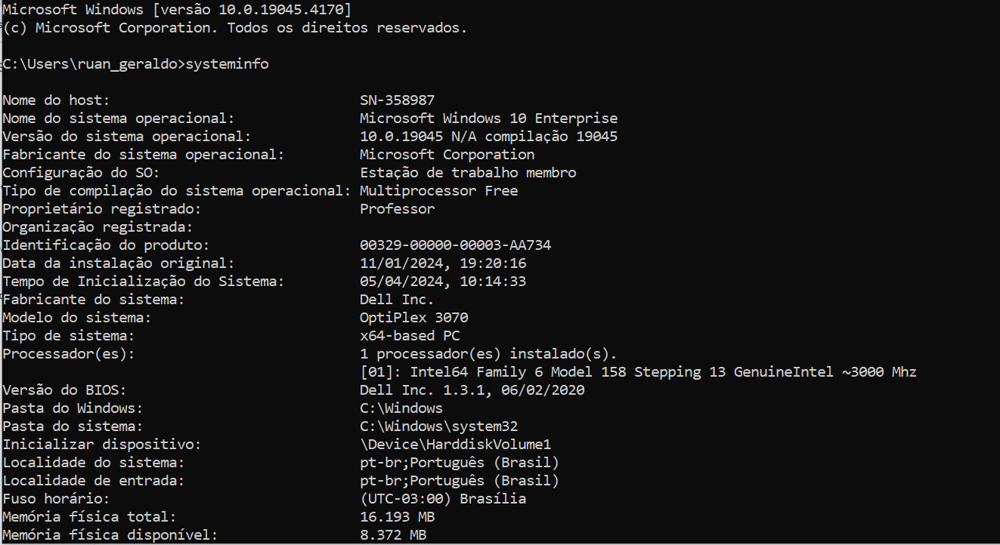
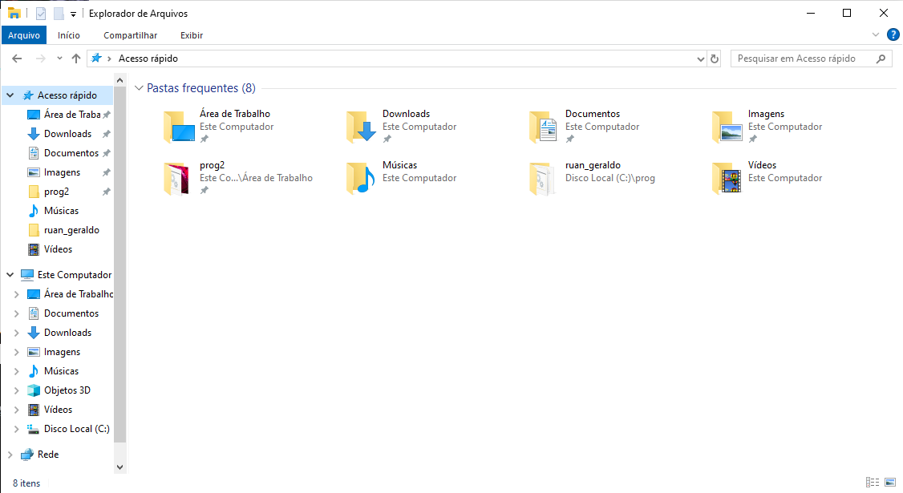

Sistema Operacional
O que é?
Fundamentalmente, um sistema operacional é um software, que pode ser o Linux, Windows, Android, macOS, UNIX, entre outros. No entanto, ele não resume aquilo que seus olhos conseguem ver ou ao que você consegue interagir. Em outras palavras, é um programa que conversa diretamente com o hardware da sua máquina.

O que é Kernel?
Kernel" em inglês significa "núcleo" ou "grão" e é seguindo essa analogia que ele existe no sistema operacional: o kernel controla todas as principais funções do hardware, seja este um smartphone, um laptop, um servidor ou qualquer outro tipo de computador.

O que é a interface do Sistema Operacional (CLI E GUI)?
Uma interface de linha de comando (CLI) é um mecanismo de software que você usa para interagir com o sistema operacional usando o teclado. Outro mecanismo é uma interface gráfica (GUI), que hoje é popular em todas as aplicações e sistemas de software.
 